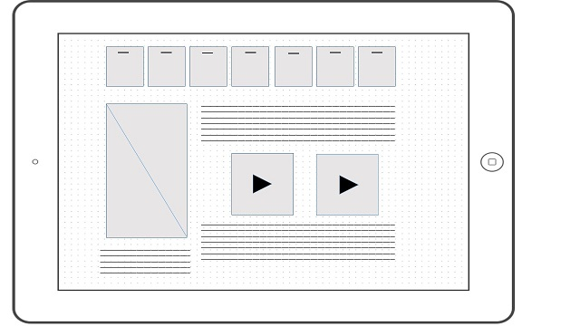

Site Purpose
The purpose of this site is to deliver clear and easy to understand, accurate weather forecasts to any visitor of the site.
Different Devices
Small Screen
Medium Screen

Large Screen
Target Audience
The target audience is very broad and very wide. The age ranges from 12 to 60. Anyone who has access to a computer or mobile device with internet access and wants to know what the weather is like. The education range is from 6th grade to PHD. The time of day the site would be accessed is in the morning between 5-9 am.
Persona
Trisha is a 26 year old women who just started her job in New York as a broker. She makes 52,000 starting salary. She has no kids and no significant other. She enjoys running and staying active. Her job starts at 6:00 every morning, she uses the Weather Forecast site every morning to tell her what to expect, and how to plan for her evening workout.
Quote: I need to know what to wear in the morning, and how to pack for my workout in the evening.
Peer Review was done by Austin Smith he said I should add more visitor cosideration to my site, and flesh out my persona section.
I like his review but I feel as though my persona section is plenty long. I did however re design my mobile device wireframe to be more visitor friendly.